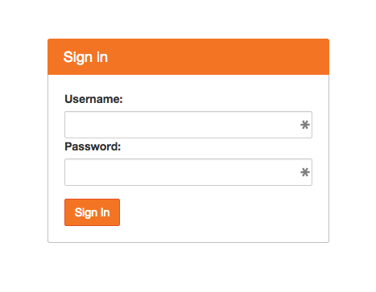
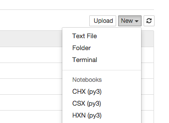
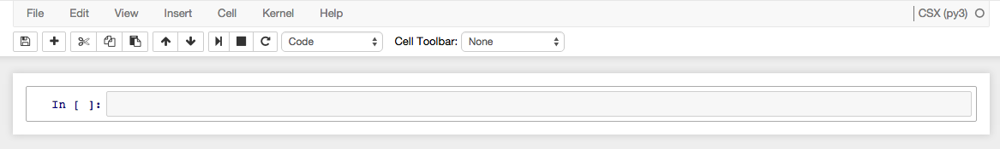

Remote Access¶
You can perform data analysis remotely using Jupyter, an interactive computing environment in your Internet browser.
Accounts¶
Note
In the future, it is hoped that all users will automatically receive accounts with their beam time. At the present, it is up to the beamline staff to ensure that visiting users receive the requisite accounts on an individual basis.
You need access to the BNL campus network, via a wired connection or VPN. This requires a BNL “domain account,” typically associated with BNL email address, which you can obtain from the ITD.
You also need a “controls account” — a separate account specifically for the NSLS-II Controls Network. This is not the same as BNL “domain account,” though it typically reuses the same username and a different password. Obtain this by asking the beamline scientist, who will contact the NSLS-II system administrators.
NSLS-II Jupyter Notebook Servers¶
Use a VPN client and your BNL domain account to get onto the BNL network. (Use
vpngateway.bnl.gov.) Or, if on site, you may use the wired network. From the on-site wireless network, “Corus,” you still need to use the VPN.Go to https://notebook.nsls2.bnl.gov. Remember, if you are not connected to the campus network, that link will not work.
You will be shown a login prompt. Here, enter your controls account and password.
You will shown a list of beamlines that you have access to. Choose one.
To start a new notebook, select a “kernel” from the menu at the top-right. A typical example is named like “CHX (current)”.

This will open a new notebook. Enter code and press shift+enter to execute it. Python libraries for accessing and analyzing data are already installed. Your code will be executed on machines physically close to where the beamline’s data is stored, giving optimal performance.

See the examples and the project documentation, linked from the main page and the menu on the left, for more.
Troubleshooting¶
Problem: User generated too much output in a notebook (lots and lots of printed text or figures) so that the file size grew to 120 MB (!). It was so slow to load that the notebook became effectively impossible to open.
Solution:
It is possible to clear the output cells from a notebook, which will reduce the filesize to a manageable one. The inputs (your code) are retained.
Choose “New -> Terminal” from the menu where you normally go to open a new notebook. This should open a new tab with a black terminal screen.
Get into the directory where your notebook is located using cd.
Run this special command to make a copy of your notebook with the output scrubbed out:
jupyter-nbconvert YOUR_NOTEBOOK_HERE.ipynb \
--Exporter.preprocessors="['nbexamples.strip_output.StripOutput']" \
--to notebook --output recovered.ipynb
You should now find a new notebook, recovered.ipynb, in that directory.
Dan